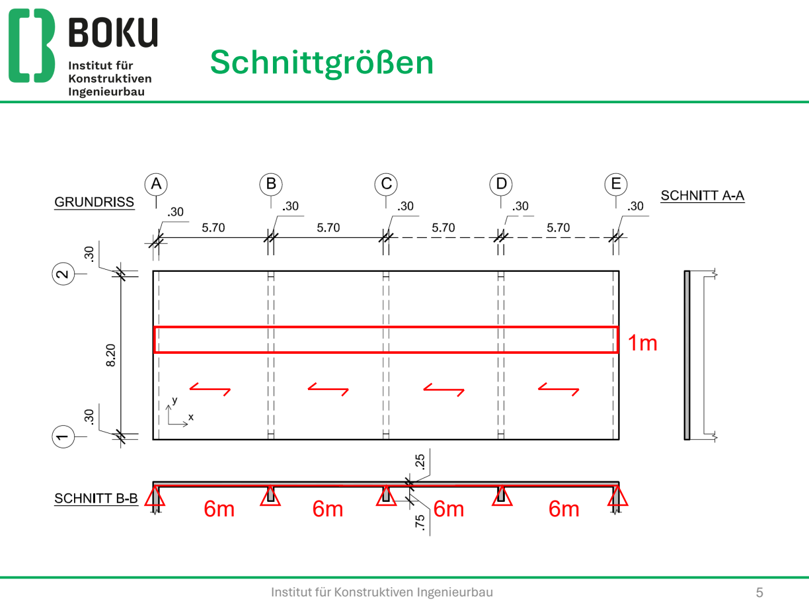
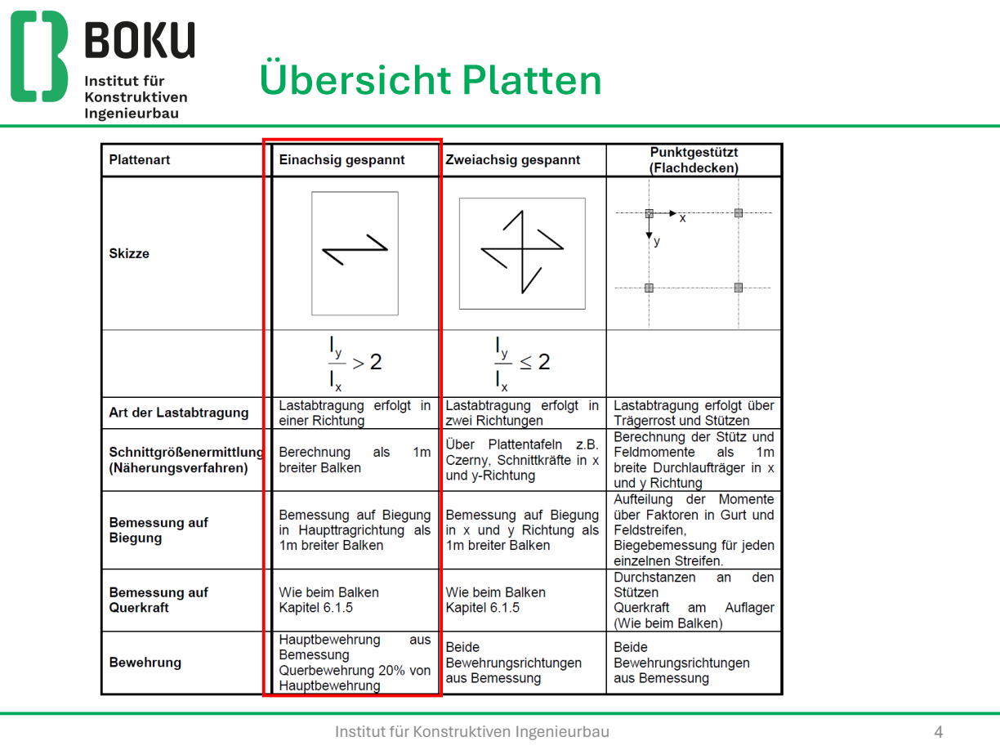

Du rechnest einen 1 m breiten Streifen wie einen Balken. Die kürzere Spannweite ist die Haupttragrichtung — dort liegt die äußere untere Lage, damit d maximal wird.

System erkennen
- Lastabtrag in eine Richtung (ly / lx ≳ 2, oder Lagerung nur an zwei Rändern).
- Gelenkig, Durchlauf, Endfeld, Innenfeld — Beiwerte wie beim Balken.
- Querbewehrung mindestens 20 % der Hauptbewehrung (Querdehnzahl Beton ≈ 0,2).

Statische Nutzhöhe
Untere Lage 1 in x (Haupttragrichtung), obere Lage 2 in x. Querrichtung verliert einen Stabdurchmesser.
dx = h − cnom − ds/2
dy = dx − ds
Schnittgrößen
Streifen b = 1 m, qsd in kN/m² wird zu kN/m. Einfeld gelenkig:
Msd = qsd l² / 8
Vsd = qsd l / 2
Durchlauf (wie DLT in der Übung, Innenfeld): Feld oft 0,07·q·l², Stütze 0,125·q·l² — Beiwert aus Skript/Tafel zur Lagerung.
Überschlägige Biegebemessung
as,erf ≈ Msd / (fyd · 0,8 · h)
Damit wählst du einen plausiblen Durchmesser, bevor du μ rechnest. Einheit: M in Nmm, f in N/mm², h in mm → mm²/m.
μ–ω-Bemessung
μsd = Msd / (b · d² · fcd)
Kontrolle: μsd < μsd,lim (Tafel im Skript, für C30/37 ohne Druckbewehrung in der Übung ca. 0,206). Sonst Druckbewehrung oder dicker querschnitt.
| μ | ω | μ | ω |
|---|---|---|---|
| 0,00 | 0,0000 | 0,05 | 0,0518 |
| 0,01 | 0,0101 | 0,06 | 0,0625 |
| 0,02 | 0,0204 | 0,07 | 0,0733 |
| 0,03 | 0,0307 | 0,08 | 0,0844 |
| 0,04 | 0,0412 | 0,09 | Tafel |
Zwischenwerte linear interpolieren (linterp wie in Mathcad).
as,erf = ω · b · d · fcd / fyd
Min / Max / Quer
as,min = max ( 0,0013 · b · d ; 0,26 · fctm/fyk · b · d )
as,max = 0,04 · b · h
Quer: mindestens 20 % der Hauptbewehrung
Wahl: Einzelstäbe oder AS-/CS-Matten (asymmetrisch, 20 % Quer schon drin). Mindestplattendicke nach Skript nicht unterschreiten.
Querkraft
Spitze am Auflager reduzieren (frei drehbar: maßgebend im Abstand d vom Auflagerrand). Platten: CRd,c = 0,12 (im Kurs, nicht der Balkenwert 0,18).
k = 1 + √(200/d) ≤ 2,0 (d in mm)
ρl = as / (b d) ≤ 0,02
vRd,c = CRd,c · k · (100 ρl fck)1/3 ≥ vmin
vmin = 0,035 · k3/2 · √fck
VRd,c = vRd,c · b · d
Platten möglichst ohne Schubbewehrung. Ist VRd,c ausreichend, entfällt VRd,max. Punktuelle Lasteinleitung → Durchstanzen, nicht Plattenquerkraft.
GZG und Verankerung
Durchbiegung unter quasi-ständiger Last: w ≤ l/250, bei empfindlichen Nachbarbauteilen l/500. Schalungsüberhöhung max. l/250. Genaues EI aus Zustand I/II wird in der Prüfung oft nur überschlägig verlangt.
Feldbewehrung am Endauflager: Zugkraft aus der Auflagerquerkraft. Alle Stäbe an das Auflager führen (abgestuft: mindestens 50 %). Vorhandene Verankerungslänge bis Außenkante minus Deckung prüfen.
Beispiel — Bürodecke, Einfeld 5,0 m
h = 20 cm, l = 5,0 m gelenkig, C30/37, BSt 550S, XC1, g2 = 2,0 kN/m², qk = 3,0 kN/m², ϕ10.
g1 = 5,0 gges = 7,0 qsd = 1,35·7,0 + 1,5·3,0 = 13,95 kN/m²
Msd = 13,95 · 5² / 8 = 43,59 kNm/m
Vsd = 13,95 · 5 / 2 = 34,88 kN/m
cnom = 20 mm, d = 200 − 20 − 5 = 175 mm
μsd = 43,59·106 / (1000 · 175² · 20) = 0,0711 < μlim
ω ≈ 0,0745 (zwischen 0,07 und 0,08 interpoliert)
as,erf = 0,0745 · 1000 · 175 · 20 / 478 = 5,46 cm²/m
as,min = 0,26 · 2,9/550 · 1000 · 175 = 2,40 cm²/m
gewählt ϕ10/14 → 5,61 cm²/m Quer ≥ 1,12 cm²/m
k = 2,0 (Begrenzung) VRd,c ≈ 90 kN/m ≫ Vsd,red ≈ 31 kN/m
Keine Schubbewehrung. Nachweis Druckstrebe entfällt.